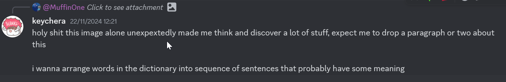

One day in my Discord friend group, the following interaction happened:
Someone posted a screenshot of news about one of my favorite games, Honkai: Star Rail, winning an award, followed by an image reaction that shows approval and features a character from the Honkai: Star Rail universe. Thematic, playful, the usual atmosphere this Discord server has that I love.
But somehow, that reaction image stuck with me. It amuses me mildly, but I cannot articulate it well at the time. So I took some time to gather my thoughts, arranging words in a particular order in this article, hoping this little pocket of experience could be conveyed in textual form.
There are several amusing aspects that I successfully recognized.
The first aspect is how these memes usually are: It is a parody to a popular format. I was familiar with the meme format "this post was made by __ gang", "this post was approved by the council of _", etc. There is also the website "Snope" which provides fact-checking articles that is also the subject of the parody. This familiarity of these memes is what I think enables me to be easily enjoy them.
The second aspect is that this is also ironic humor, a class of comedy that I really enjoy. But to explain how this is an irony, a little knowledge about this "Enigmata" is needed, so bear with me as I introduce a bit about the fictional universe of Honkai: Star Rail.
Honkai: Star Rail is a game, which sets in a universe that has this concept of "Paths". This Path is kinda similar to religion in our world, but instead of revering to divine entities, someone who follows a Path will revolve their life around the word of the Path's name. A follower of the Path of Destruction will bring about destruction around them, the Path of Preservation will uphold the act of preserving and protecting others, and so on. And now, back to the topic at hand—the Path of Enigmata, which is, to put it lightly, rather confusing.
Enigmata, the word itself, is a Latin word that means "a puzzling or inexplicable occurrence or situation."1. Canonically, the followers of this Path are shrouded in mystery. But it's not just them themselves that are confusing, They also have the goal to bring confusion to the world. One way they achieve that is through falsification of information. By now, you’ve surely spotted the irony—or have you?
The meme format that shows the act of "fact-checking" is done by the actors that create hoaxes as their way of life. A textbook irony, a staple of humor that made me smile. The word "real" to describe "Enigmata followers" is also the icing on the cake. It is brilliant.
And that should have been all there is to it...
But let's talk about 2 more aspects on how it amuses me: What I encountered along the way and the timing of when all of this occurred.
While I was verifying my understanding of the path of Enigmata, I encountered this particular in-game text:
This sentence appearing before me feels like a villain has been introduced into my story. It attacked me. I start reflecting on a lot of things all of a sudden. I don't even know if it's a real fallacy or not, but I want to talk about how it affected me at the time. But to do that, let me introduce a bit about myself and the state of mind at the time.
I am just a young programmer with a bit of experience in the industry, and as a side, I have also been diligently learning Japanese for the past 6 years where I have achieved a pretty decent level, I must say. Even currently, I managed to work in a place where I employ both my programming and Japanese skills. I am very confident in my ability to grow. And I feel like I was just getting started. I can still grow even more, I can still experience even more. I feel limitless... and now, do you see where the conflict arises?
I've been grounded at that moment. It should have been the most obvious thing but it felt to me like a grand discovery. What the fallacy stated actually doesn't directly contradict the confidence that I have, but that fallacy being true means that I will encounter a limit of my growth, simply because there are limits to what I can experience and recognize. So then, what happens to my confidence?
That is still an ongoing process. If I have reached to a nice resolution in this internal battle someday, I probably will write another article. But for now, the point that amuses me here is that this enabled me to realize that, clearly, I still don't know myself enough. It is a fallacy that all things can be experienced or recognized, and by extension, it is also fallacy that you can recognize all things about oneself.
I am amused by my own being.
Another thing that amuses me is the timing of when all of this occured. It just feels like what happened to me recently has been all thematic with Enigmata as the anchor. What follows here will be several things that probably feel like a stretch to be in the conversation, but to me at the moment, it feels like an illusion of a beautiful continuation. Each thing that I will throw here probably needs a dedicated section to explain but I want this to focus on how these all feel connected to me, and it all started from this:
This text touched on the two factions in the Path of Enigmata, and the focus here, The Riddlers, introduces me to the aspect of a language that I've been oblivious to, the certainty aspect of it, and how it can be tampered with.
That has a tie-in to the discussion I had with my friend about Large Language Models(LLM) the day before. We were discussing that there might be a whole class of information that never has any textual form anywhere which LLM could probably miss, and knowing that, there ought to be something that LLM can't approximate. It was just a light discussion and we were just throwing ideas around. But now, being made aware that the language itself can have varying degrees of certainty, I saw that discussion we had in a different light.
Another tie-in that I felt is about another discussion I had about writing stories. That discussion led me to think about how an author should structure information so that it doesn't overwhelm the reader. But I was also thinking about how much it is the responsibility of the reader's part to understand what the author has conveyed. I do not in any way have qualifications to answer all of this, but this topic of Enigmata has brought a new dimension to it, which is how an author could intentionally make something confusing in-universe with the type of confusion that intrigues rather than alienates.
Another one is about my recent realization regarding my current language skills. I felt like a lot of parts in my understanding are just simply approximations rather than being definite. I came to that conclusion because there are a lot of words that, at a glance, felt like I understand, but when I try shining a light on them, I lose all my confidence in how to use that word. This week I realized that I misremembered the Japanese word 運転見合わせ (I remembered it as 運転合わせ and wrongly used it in my email and realized the mistake later). While writing, I almost misused the word "homage", when I should use the word "parody" (Thanks ChatGPT for the clarification!). Serendipitously, since we are talking about timing, I just rediscovered the word "serendipity" last week because my friend used it when describing the art of Photography. Even in my understanding, there is a lot of uncertainty and incompleteness that I am not fully aware of.
All of these discoveries and connections amused me a lot.
The experience of writing this article, too, is baffling to me. For a while, I wanted to start writing and there have been a lot of ideas to begin my writing journey. I wanted to talk about my experience attending Tokyo Emacs several weeks ago and how it gave me a lot of new perspectives in life. I wanted to talk about how one defines a good software engineer, which stems from another discussion I had with my friends. I wanted to talk about my drawing journey, an old hobby of mine that I recently picked up again. There are all these topics that are clear and direct, yet this confusing Enigmata is the first article that I finished writing.

My friends who observed my behavior towards this Enigmata, too, must have been perplexed. I also don't even expect myself to delve into it this deeply. There are several instances where in mid-conversation with my friends, I clearly state "Hey this conversation is nice, but my mind is currently full of Enigmata so I'll probably be less responsive". (I'm sorry for this :p)
And, and, this group of friends that I mentioned in the beginning, actually have some relation to the word Enigma...
All of these are so enigmatic...
It's as if...
It's as if this article is written by a real follower of Enigmata (self-proclaimed)
Thank you for being confused with me.
Look at my next drawing that is still work in progress, there is no relation to this article whatsoever but I just want you to look at it. When I am done I will post them on my twitter and instagram (psst, I post drawing stories in instagram everyday!).
Published: 2024-11-24
Tagged: random Honkai: Star Rail
This is me trying to write a blog while also familiarizing myself with Emacs. I wanted to experience the emacs clojure experience but this is still an unfamiliar land for me. The other buffer keeps saying that it fails auto-save. I still don't understand how to wield babashka from here. But that won't stop me. I'll C-x C-s now so that I can finally commit a file and push with Magit. See ya!
Published: 2024-11-10